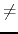

Origami is the traditional Japanese art of paper folding. One day, Professor Egami found the message board decorated with some pieces of origami works pinned on it, and became interested in the pinholes on the origami paper. Your mission is to simulate paper folding and pin punching on the folded sheet, and calculate the number of pinholes on the original sheet when unfolded.
A sequence of folding instructions for a flat and square piece of paper and a single pinhole position are specified. As a folding instruction, two points P and Q are given. The paper should be folded so that P touches Q from above (Figure 4). To make a fold, we first divide the sheet into two segments by creasing the sheet along the folding line, i.e., the perpendicular bisector of the line segment PQ, and then turn over the segment containing P onto the other. You can ignore the thickness of the paper.
The original flat square piece of paper is folded into a structure consisting of layered paper segments, which are connected by linear hinges. For each instruction, we fold one or more paper segments along the specified folding line, dividing the original segments into new smaller ones. The folding operation turns over some of the paper segments (not only the new smaller segments but also some other segments that have no intersection with the folding line) to the reflective position against the folding line. That is, for a paper segment that intersects with the folding line, one of the two new segments made by dividing the original is turned over; for a paper segment that does not intersect with the folding line, the whole segment is simply turned over.
The folding operation is carried out repeatedly applying the following rules, until we have no segment to turn over.
In the examples shown in Figure 5, (a) and (c) show cases where only Rule 1 is applied.
(b) shows a case where Rule 1 and 2 are applied to turn over two paper segments
connected by a hinge, and (d) shows a case where Rule 1, 3 and 2 are applied to
turn over three paper segments.
After processing all the folding instructions, the pinhole goes through all the layered segments of paper at that position. In the case of Figure 6, there are three pinholes on the unfolded sheet of paper.
The input is a sequence of datasets. The end of the input is indicated by a line containing a zero.
Each dataset is formatted as follows.
k
p1x p1y q1x q1y
...
pkx pky qkx qky
hx hy
For all datasets, the size of the initial sheet is 100 mm square, and, using mm as the
coordinate unit, the corners of the sheet are located at the coordinates (0, 0),
(100, 0), (100, 100) and (0, 100). The integer k is the number of folding instructions
and
1k10. Each of the i following k lines represents a single folding
instruction and consists of four integers pix , piy , qix and
qiy , delimited by a space. The positions of point P and Q for the i-th
instruction are given by
(pix, piy) and
(qix, qiy), respectively.
You can assume that P  Q. You must carry out these instructions
in the given order. The last line of a dataset contains two integers hx and hy
delimited by a space, and
(hx, hy) represents the position of the pinhole.
You can assume the following properties:
For example, Figure 5 (a), (b), (c) and (d) correspond to the first four datasets of the sample input.
For each dataset, output a single line containing the number of the pinholes on the sheet of paper, when unfolded. No extra characters should appear in the output.
2 90 90 80 20 80 20 75 50 50 35 2 90 90 80 20 75 50 80 20 55 20 3 5 90 15 70 95 90 85 75 20 67 20 73 20 75 3 5 90 15 70 5 10 15 55 20 67 20 73 75 80 8 1 48 1 50 10 73 10 75 31 87 31 89 91 94 91 96 63 97 62 96 63 80 61 82 39 97 41 95 62 89 62 90 41 93 5 2 1 1 1 -95 1 -96 1 -190 1 -191 1 -283 1 -284 1 -373 1 -374 1 -450 1 2 77 17 89 8 103 13 85 10 53 36 0
3 4 3 2 32 1 0